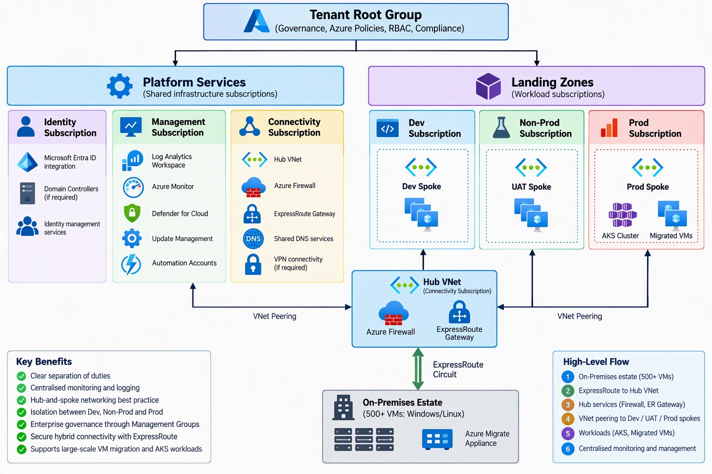

1. The Vision: Why Microsoft Azure?
Migrating from on-premises infrastructure to Microsoft Azure provides unparalleled scalability, agility, and robust security. It shifts capital expenditure (CapEx) to operational expenditure (OpEx), allowing organizations to innovate faster and optimize costs globally.

2. Assessment & Planning
A successful migration starts with a robust plan. Use the Azure Cloud Adoption Framework (CAF) to align business, people, and technology strategies.
- Discovery: Inventory all physical and virtual servers using Azure Migrate.
- Readiness Assessment: Identify application dependencies and compatibility.
- TCO Analysis: Calculate the Total Cost of Ownership (TCO) for the cloud footprint.
3. The 5 R's of Migration Strategy
Rehost (Lift & Shift)
Move VMs exactly as they are without modifying the application code. Fast and reliable.
Refactor (Repackage)
Slight modifications to leverage PaaS (e.g., Azure SQL Database, App Service).
Rearchitect
Modify and extend application code base to optimize for cloud scale.
Rebuild
Rewrite the application from scratch using cloud-native technologies (Containers, Microservices).
Replace
Move to a SaaS solution (e.g., Office 365, Dynamics 365) and retire legacy apps.
4. Execution & The Landing Zone
Before moving any workloads, establish an Azure Landing Zone. This foundational environment accounts for scale, security, governance, networking, and identity.
Use Azure Migrate to replicate on-premises machines to Azure seamlessly. Test the migration in an isolated VNet before the final cutover.
5. Post-Migration Best Practices
Security: Enable Microsoft Defender for Cloud and implement Zero Trust principles.
Cost Management: Use Azure Cost Management + Billing, set budgets, and purchase Azure Reserved Instances.
Governance: Enforce compliance with Azure Policy and manage access with Role-Based Access Control (RBAC).
Optimization: Continuously monitor application performance with Azure Monitor and Application Insights.